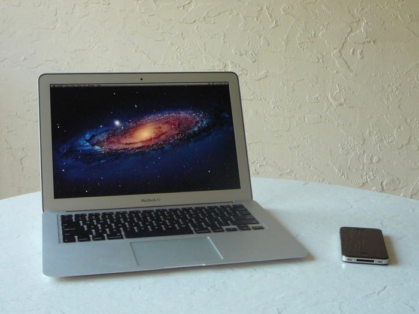

 That picture is not entirely honest. There’s more to what I use on an everyday basis, but those two gadgets account for most of it.
Hardware
My only computer is a 13" MacBook Air, with Thunderbolt and a Core i7. It’s the best computer I’ve ever owned, with an incredible mix of portability, battery life, power, and storage. I usually have it away from a desk, but when plugged into the wall, I also use a Twelve South BassJump. For the price, size and convenience, I can’t think of anything better. All the stuff I’m listening to is compressed in some form and I don’t need a crazy sound system. Its drivers aren’t fully compatible with Lion yet—any audio from Safari crashes—but it’s plenty capable with music. (Updated 10/25/11: Version 2.0 of the BassJump drivers fixes this problem.)
Tucked away in a cabinet, there’s a 1TB Time Capsule pumping out WiFi, hosting Time Machine backups, and acting as a makeshift media server. I’ve downloaded a lot of TV in my time, and it’s all stored there for streaming whenever I want. I also have non-Time Machine backups of all my data since senior year of high school in a folder on there.
The 32GB GSM iPhone 4 is my everything device, not just a mobile device. It’s a phone, portable computer, e-reader, GPS device, camera, game console, MP3 player, and so on. It’s insane. When I listen to music, I plug in the Apple In-Ear headphones with the remote. Again, everything I listen to is compressed so I don’t need the greatest headphones, and these are pretty comfortable with a works-as-advertised remote for skipping tracks and answering calls. No case for the iPhone.
Software
The MacBook Air came with OS X Lion preinstalled. It’s clear that the OS was made for a laptop of this size with a multi-touch surface. It all works pretty well together. TextEdit, Safari, and iTunes round out the first-party apps that I use the most.
From the Mac App Store, I’ve installed Pixelmator for creating and modifying images, Transmit for maintaining my websites, and The Unarchiver for expanding compressed downloads. I also use Transmission for downloads.
There are a couple things running “behind the scenes,” like the Unarchiver. In Safari, I have the ClickToFlash, LastPass, and JavaScript Blacklist extensions installed. At a system level, I use Perian for watching movie downloads in QuickTime Player, Needle Drop to generate power hour playlists in iTunes as transparently as possible, and Hex Color Picker to help write CSS.
I covered the apps I use most frequently on my iPhone here.
There are a couple things I used to have installed that I realized I don’t need anymore. For example, I got Flip4Mac when it came out to compliment Perian, but I never downloaded a single WMV file. Similarly with Perian, there’s no real need for VLC (in my casual media usage). On the iPhone, I used to have TouchPad installed when I had a TV to plug my computer into, but that’s not the case anymore. I still wholeheartedly recommend the app as the best in its class for using an iOS device to control a Mac.
There’s not a lot to this setup, but it empowers me to do everything I want. That’s pretty cool.